How to Use AutoBrain: A Guided Tour
AutoBrain has a lot under the bonnet — and this walkthrough takes you screen by screen so you know exactly where everything lives. Everything below is from the live app, so you can follow along in the demo.
Start at the main menu
Every vehicle gets its own home screen. From the main menu you can jump to any section — timeline, fuel, diagnostics, receipts, parts, mods, logbook, valuation, analytics and settings — without hunting through menus.
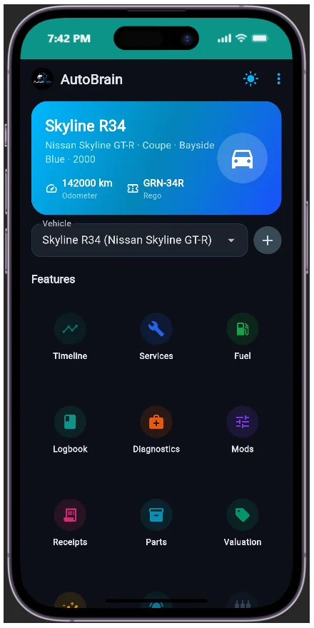
Set up the vehicle profile
Add a car in seconds. For Australian plates, the rego lookup auto-fills the VIN, make, model, year and engine from a plate plus state — no typing out a spec sheet by hand.

Follow the vehicle timeline
Every event in the car's life lands on the timeline: services, fuel fills, parts, mods, receipts and trips, in order. It's the fastest way to see the full story of a vehicle at a glance — and the history that powers every prediction AutoBrain makes.
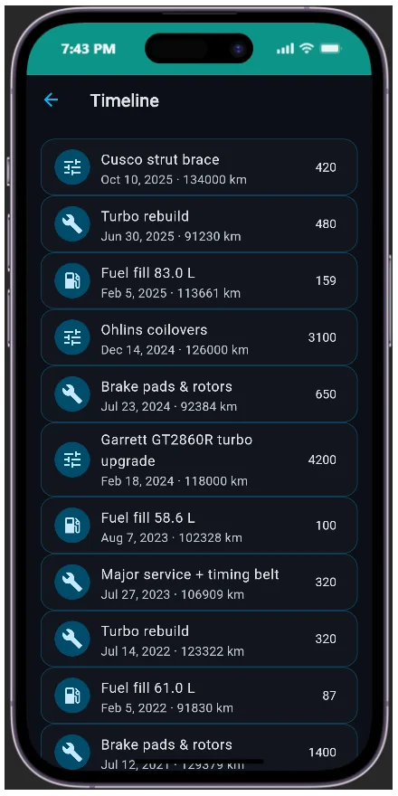
Fuel intelligence, not just fill-ups
The fuel screen turns every receipt into insight: L/100km, cost per kilometre, efficiency and cost graphs, plus AI observations on your driving. Filter and export by Australian financial year — CSV, or with the receipt images bundled in a ZIP.
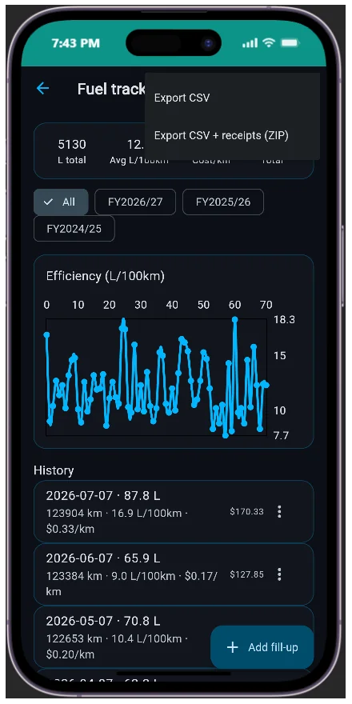
AI diagnostics when the warning light comes on
Describe the symptom or paste the OBD fault code. AutoBrain returns likely causes, severity, the parts involved and a cost estimate in one tap — so you walk into the workshop knowing what to ask for.
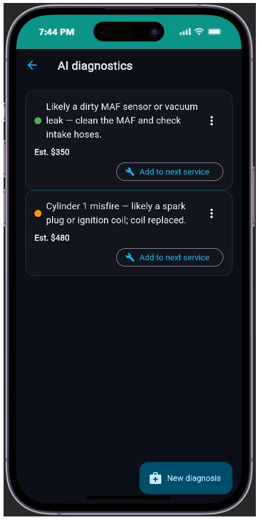
Scan receipts, not fingers
The receipt scanner uses OCR to pull parts, labour, cost and warranty out of a photo, then auto-adds them to services and inventory. No manual typing after every workshop visit.
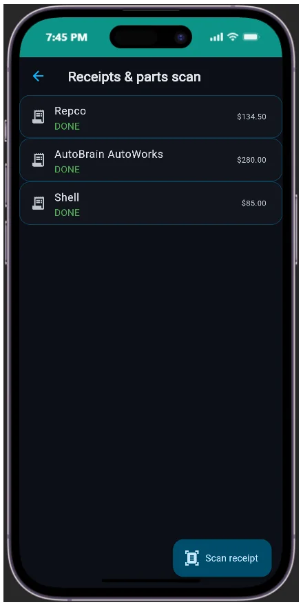
Keep parts in stock
The parts inventory tracks quantities and usage per vehicle, and the AI suggests reorders before you run dry. Spares, oils, filters — never lose track of what you have again.
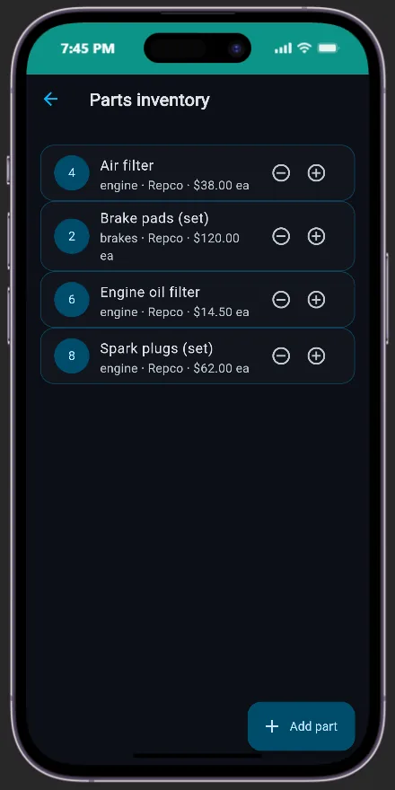
Log the build sheet
The modifications screen is your build sheet: every mod with photos and cost, AI impact estimates, and a one-click export with images. Document the build, know what it's worth.
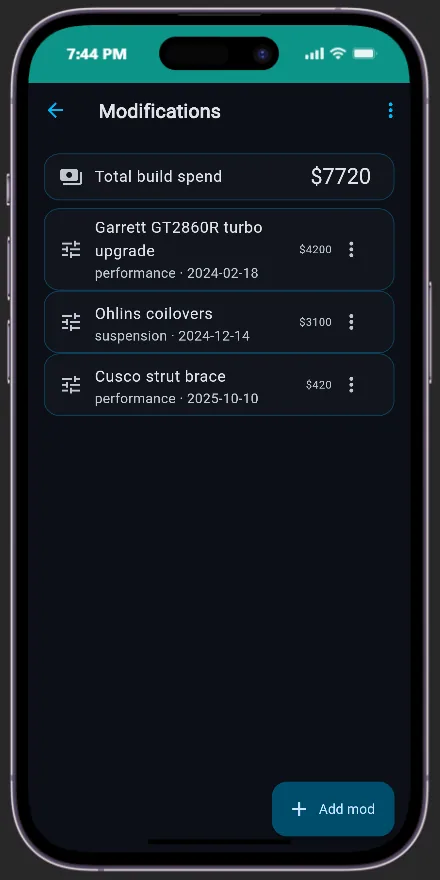
Logbook trips, ATO-friendly
The logbook records manual or GPS-tracked trips and exports them aligned to the Australian financial year — ready for the accountant.
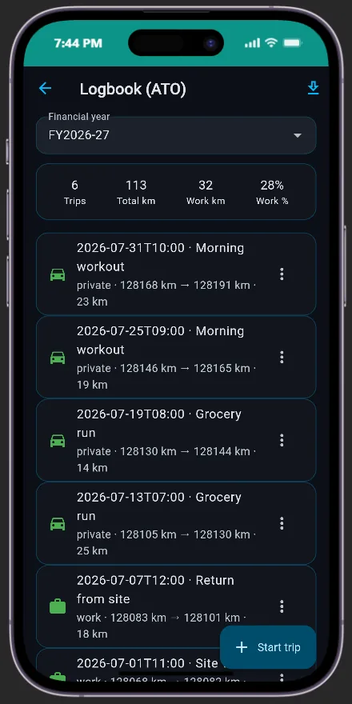
Know what it's worth
The resale value estimator gives a value range, a trend and recommendations based on your vehicles and mods — so the maintenance history you've built finally pays you back at trade-in.
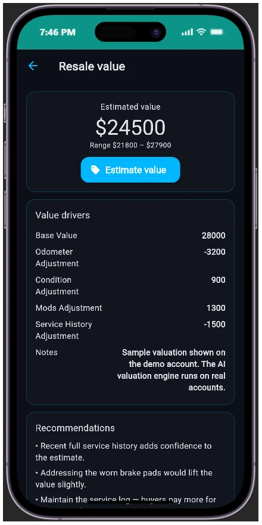
Analytics across every vehicle
The analytics screen rolls everything up: total spend, total cost of ownership, cost per kilometre and a 12-month forecast across your whole fleet — the honest number behind "how much does this car really cost me".
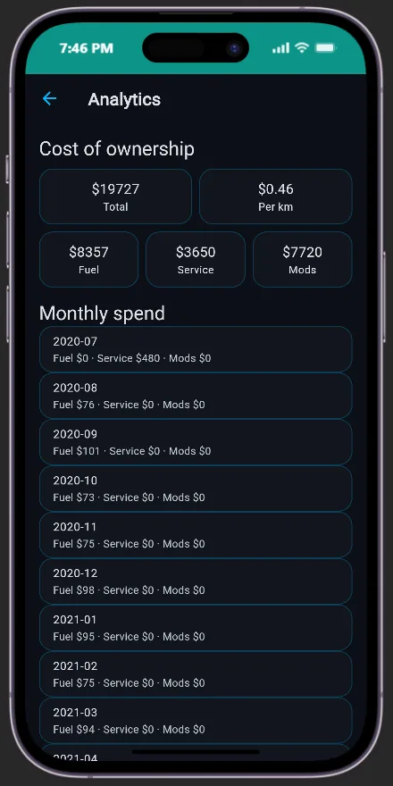
Never miss a service or rego renewal
Notifications keep you ahead of the schedule — upcoming services, rego expiry, and anything the AI predicts is due. The reminder arrives before the problem does.
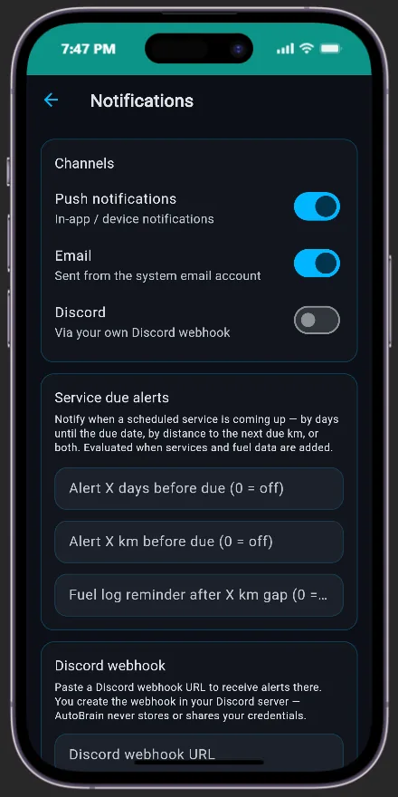
Settings & security
Settings is where you take control: TOTP multi-factor authentication, role-based access, your AI router, and full profile export/import. Your data is portable — take it anywhere, or restore it in one file.
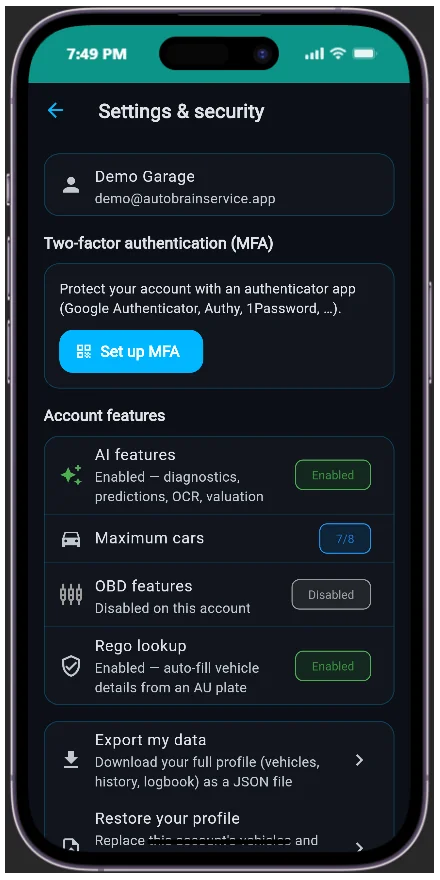
Frequently asked questions
How do I start using AutoBrain?
Open the live demo or create a free account, add your first vehicle with a quick Australian rego lookup, then work through the main menu: timeline, fuel, diagnostics, receipts, parts, mods, logbook and valuation.
What can AutoBrain track?
AutoBrain tracks services and predictive maintenance, fuel economy, AI diagnostics, receipts and parts inventory, modifications, logbook trips, resale value and total cost of ownership across all your vehicles.
Does AutoBrain work with OBD codes?
Yes. Paste OBD fault codes or describe symptoms in the diagnostics screen and AutoBrain returns likely causes, severity, parts and a cost estimate.
Ready to try it? Open the live demo or review every feature.